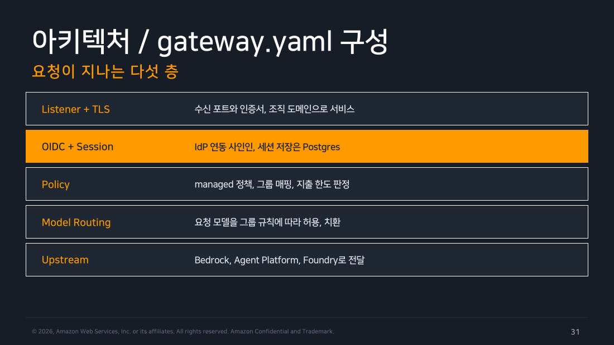
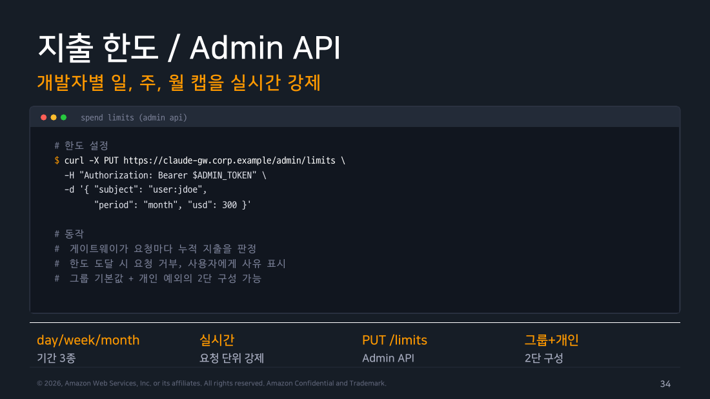

Part 3 — Claude apps gateway¶
한 줄 요약¶
Claude apps gateway는 조직이 직접 띄워서 운영하는 게이트웨이입니다. 게이트웨이(gateway)란 여러 곳으로 흩어질 요청을 한 서버에서 모아 받아 검사하고 대신 전달해 주는 중계 서버를 말합니다. 개발자는 사내 계정으로 여기에 로그인해서 Claude Code를 씁니다.
이 게이트웨이를 두면 개발자 노트북에서 자격증명(API 키 같은 인증 수단)이 완전히 사라집니다. 대신 그룹별 모델 접근 제어, 개인별 지출 한도, 요청 하나하나의 관측 기록이 게이트웨이 한 곳으로 모입니다.
왜 알아야 하나¶
Part 2에서 본 Bedrock 직결 방식의 가장 큰 장점은 이미 쓰고 있는 AWS 체계를 그대로 물려받는다는 점이었습니다. 인증도 과금도 새로 만들 필요가 없었습니다.
구체적으로는 이렇게 나뉘어 있었습니다.
- IAM(AWS의 권한 관리 서비스): 누가 어떤 API를 부를 수 있는지 정합니다.
- Cost Explorer(AWS 비용 조회 도구): 얼마를 썼는지 알려줍니다.
- Identity Center(AWS의 SSO 서비스. SSO는 Single Sign-On, 즉 사내 계정 하나로 여러 서비스에 로그인하는 방식입니다): 퇴사·이동 처리와 함께 접근 권한을 끊어줍니다.
여기까지는 조직 입장에서 꽤 만족스러운 그림입니다. 그런데 실제로 조직 규모로 굴려보면 네 군데 빈 칸이 남습니다.
빈 칸이라고 했지만 "AWS가 무능해서" 생긴 구멍은 아닙니다. Claude Code라는 도구를 조직 단위로 쓸 때만 새로 생기는 요구에 가깝습니다.
-
개발자별 지출 한도를 실시간으로 막을 수단이 없습니다. Cost Explorer는 사후 집계 도구입니다. 어제 누가 얼마 썼는지는 알려줍니다. 하지만 이번 달 300달러를 넘긴 사람의 다음 요청을 지금 당장 막아주지는 못합니다. IAM 정책 문법에도 "월 300달러 초과 시 거부" 같은 표현은 없습니다.
-
IdP 그룹별로 모델 접근을 차등할 수단이 마땅치 않습니다. 여기서 IdP(Identity Provider, 신원 공급자)는 사내 계정과 소속 조직을 관리하는 시스템입니다. Okta나 Microsoft Entra ID 같은 것들이 여기 해당합니다. Bedrock의 IAM 정책으로도 특정 모델만 허용하도록 좁힐 수는 있습니다. 다만 그 단위가 IAM 역할입니다. "플랫폼팀은 Opus까지, 일반 개발자는 Sonnet까지, 외주 인력은 Haiku만"을 IdP 그룹 기준으로 표현하려면, 역할을 그룹 수만큼 쪼개고 그 매핑을 따로 관리해야 합니다.
-
조직 표준 로그인 경험이 없습니다. 개발자는 여전히
aws sso login을 치고, 프로파일 이름을 외우고, 리전을 맞춰야 합니다. 인프라 엔지니어에게는 일상이지만, 프론트엔드 개발자에게는 매번 막히는 지점입니다. -
요청 단위 중앙 텔레메트리가 없습니다. 텔레메트리(telemetry)는 시스템이 스스로 남기는 관측용 기록을 뜻합니다. CloudTrail은 AWS API 호출 감사에는 좋습니다. 하지만 "이 요청이 어떤 그룹의 누가, 어떤 모델로, 몇 토큰을 썼고, 정책 판정 결과가 무엇이었는지"를 한 줄로 남겨주지는 않습니다.
"이미 SSO를 쓰고 있는데 관문이 또 필요한가"라는 의문이 들 수 있습니다. SSO가 해주는 일은 "이 사람이 누구인지" 확인까지입니다. 반면 위 네 가지는 "이 사람의 이번 요청을 지금 통과시킬 것인가"를 요청마다 판정하는 일입니다. 요청 단위로 판정하려면 요청이 지나가는 길목에 서 있는 무언가가 필요합니다.
Claude apps gateway는 정확히 이 네 조각을 채우려고 만들어진 컴포넌트입니다. 자체 호스팅, 즉 Anthropic이 운영하는 서비스에 가입하는 게 아니라 조직이 직접 컨테이너로 띄워서 씁니다. 그리고 개발자의 Claude Code는 그 주소 하나만 바라보게 됩니다.
이 파트에 실습 기록이 없는 이유
이 문서를 쓰는 조직은 apps gateway를 아직 배포하지 않았습니다. 현재 경로는 Part 2에서 다룬 Bedrock 직결입니다. 게이트웨이를 로컬에서 재현하려면 게이트웨이 컨테이너 이미지, 한도·grant 저장용 Postgres, 그리고 사내 IdP에 OIDC 클라이언트를 실제로 등록하는 절차가 모두 필요한데 이번 주 실습 범위 밖입니다. 그래서 이 파트는 교재와 공식 문서를 근거로 한 개념 정리이고, 실측 수치나 실행 출력은 넣지 않았습니다. 도입을 검토하게 되면 그때 실측 기록을 별도로 남기겠습니다.
1. 요청이 지나는 다섯 층¶
게이트웨이를 이해하는 가장 빠른 방법은 요청 하나가 통과하는 순서를 따라가는 것입니다. 설정 파일 gateway.yaml의 구성이 곧 그 순서입니다. 각 층은 앞 층이 만들어 준 정보를 받아서 자기 판정을 하나씩 얹습니다.
flowchart TD
CLI["Claude Code CLI<br/>managed settings로 게이트웨이 지정"]
L1["<b>1. Listener + TLS</b><br/>수신 포트와 인증서<br/>조직 도메인으로 서비스"]
L2["<b>2. OIDC + Session</b><br/>IdP 사인인, 세션은 무상태 JWT<br/>store(Postgres)는 한도·grant 기록"]
L3["<b>3. Policy</b><br/>managed 정책, 그룹 매핑<br/>지출 한도 판정"]
L4["<b>4. Model Routing</b><br/>허용 목록으로 모델<br/>허용 또는 거부(400)"]
L5["<b>5. Upstream</b><br/>Bedrock / Agent Platform<br/>/ Foundry 로 전달"]
DENY["요청 거부<br/>사유를 사용자에게 표시"]
CLI --> L1 --> L2 --> L3
L3 -->|"한도 초과 · 정책 위반"| DENY
L3 -->|"통과"| L4
L4 -->|"허용 목록 밖"| DENY
L4 --> L5
style CLI fill:#e3f2fd,stroke:#1976d2,color:#000
style L1 fill:#f3e5f5,stroke:#7b1fa2,color:#000
style L2 fill:#f3e5f5,stroke:#7b1fa2,color:#000
style L3 fill:#fff8e1,stroke:#f9a825,color:#000
style L4 fill:#fff8e1,stroke:#f9a825,color:#000
style L5 fill:#e8f5e9,stroke:#388e3c,color:#000
style DENY fill:#ffebee,stroke:#c62828,color:#0001층 Listener와 TLS는 평범한 리버스 프록시의 첫 층과 같습니다. 리버스 프록시(reverse proxy)는 사용자의 요청을 대신 받아 뒤쪽 서버로 넘겨주는 서버입니다. claude-gw.corp.example 같은 조직 도메인으로 서비스하고, TLS(HTTPS 암호화) 인증서를 물립니다.
여기서 중요한 건 이 주소가 개발자가 알아야 할 유일한 주소가 된다는 점입니다.
2층 OIDC와 Session이 이 컴포넌트를 단순 프록시와 갈라놓는 첫 지점입니다. OIDC(OpenID Connect)는 "이 사람이 누구인지"를 IdP에 물어보는 표준 로그인 프로토콜입니다. 게이트웨이는 사내 IdP와 OIDC로 연동해서 로그인 절차를 직접 처리합니다.
여기서 헷갈리기 쉬운 지점을 하나 짚고 갑니다. 세션 자체는 Postgres에 저장되는 게 아니라 무상태 JWT입니다.
- JWT(JSON Web Token)는 사용자 정보를 담고 서명을 붙인 문자열 토큰입니다. 서명만 검증하면 내용이 진짜인지 확인할 수 있습니다.
- 무상태(stateless)란 서버가 그 세션을 기억하고 있을 필요가 없다는 뜻입니다. 게이트웨이 인스턴스는 DB를 조회하지 않고도 세션을 검증할 수 있습니다.
그래서 이 설계는 오히려 수평 확장(서버 대수를 늘리는 것)에 유리합니다. 어느 인스턴스가 요청을 받아도 똑같이 검증되기 때문입니다.
그럼 Postgres(§5의 store)는 왜 필요할까요. 세션과 별개로 값을 계속 쌓아두고 조회해야 하는 것들 때문입니다. 디바이스 grant(기기별 사용 승인 기록), 요청 단위 rate-limit(정해진 시간 안에 허용되는 호출 횟수 제한), 지출 카운터가 여기 해당합니다.
정리하면 "세션을 외부 저장소에 두어서 무상태 확장이 된다"가 아닙니다. "세션은 애초에 상태가 없고, 상태가 필요한 건 한도·grant뿐이라 그것만 Postgres로 뺐다" 는 게 정확한 설명입니다.
3층 Policy는 세션에서 나온 신원 정보를 받아 판정합니다. 여기서 일어나는 일은 managed 정책 적용, IdP 그룹 정보를 조직 내부 개념으로 매핑, 지출 한도 판정 세 가지입니다.
이 층이 "거부"를 내면 뒤쪽 호출은 아예 발생하지 않습니다. 즉 비용이 발생하기 전에 막힙니다.
4층 Model Routing은 통과한 요청이 어떤 모델을 요청했는지 확인합니다. 그 그룹의 허용 목록에 있으면 그대로 두고, 없으면 400으로 거부합니다. (400은 "잘못된 요청"을 뜻하는 HTTP 응답 코드입니다.)
5층 Upstream은 마지막 층입니다. 업스트림(upstream, 상류)이란 실제로 추론을 수행하는 뒤쪽 백엔드를 말합니다. Bedrock일 수도 있고 Agent Platform이나 Foundry일 수도 있습니다.
이때 백엔드 인증은 게이트웨이가 자기 자격증명으로 대행합니다. 그래서 개발자 개인의 키는 이 경로 어디에도 등장하지 않습니다.

▲ 교재 슬라이드 31 — 아키텍처 / gateway.yaml 구성
🔴 교재 버전 드리프트:
gateway.yaml의 실제 최상위 키는 다릅니다 — 다섯 층이라는 요청 흐름 자체는 공식문서(claude-apps-gateway-config)와 맞지만, 교재가 보여주는routing:블록은 실제 스키마에 없습니다. 공식 최상위 키는 필수listen/oidc/session/store/upstreams, 선택admin/enforcement/models/managed/telemetry/pricing/access_control/limits/timeouts/rate_limits(+models와 짝인auto_include_builtin_models)입니다. 다섯 층과 이 키들의 대응은 이렇습니다. Listener+TLS→listen, OIDC+Session→oidc+session(+상태 저장은store), Policy→managed+enforcement, Model Routing→managed.policies+models, Upstream→upstreams. §3에서 실제 키 이름으로 다시 씁니다.
2. 개발자가 보는 것 — 연결은 managed settings가 결정한다¶
관리자 관점의 다섯 층은 복잡합니다. 그런데 개발자가 마주하는 표면은 오히려 Part 2의 Bedrock 직결보다 단순해집니다.
다만 이 단순함에는 조건이 하나 붙습니다. 개발자가 직접 설정하는 게 아니라, 관리자가 배포한 managed settings가 강제하는 것이라는 점입니다. managed settings는 관리자가 기기에 내려보내는 설정 파일이고, 개발자가 자기 설정으로 덮어쓸 수 없습니다.
연결을 켜는 건 개발자의 환경변수가 아닙니다. 각 기기의 managed settings에 심는 두 키입니다.
이 JSON을 MDM(Mobile Device Management, 회사가 직원 기기에 설정·소프트웨어를 원격 배포·관리하는 시스템. Jamf 등)으로 기기마다 managed-settings.json에 배포합니다.
개발자는 이걸 수동으로 설정할 수 없습니다. 로그인 화면의 방식 선택지에 게이트웨이 옵션 자체가 없고, 개발자 자신의 설정 파일에 forceLoginGatewayUrl을 적어 넣어도 무시됩니다.
배포되고 나면 흐름은 이렇습니다.
$ claude
# 브라우저가 열리고 조직 IdP 로그인 (OIDC)
# 세션이 수립되면, 이후 요청의 상류 인증은 게이트웨이가 대행
> /status
# 공급자가 gateway 경유로 표기됨
여기서 사라진 것들의 목록이 이 방식의 실제 가치입니다. AWS 프로파일 이름, 정적 액세스 키, 리전 설정이 전부 클라이언트에서 없어집니다.
다만 "클라이언트에는 아무것도 배포하지 않는다"는 아닙니다. 배포되는 대상이 바뀌는 것입니다. 자격증명 대신 "어디로, 어떤 방식으로 로그인할지"를 정하는 관리 설정 두 줄이 내려갑니다. 그 배포와 강제력은 여전히 managed settings 계층(Part 5)에 의존합니다.
Part 2에서 본 apiKeyHelper도 방향은 같았습니다. 정적 키를 파일에 두지 않고 필요할 때 발급받는다는 점에서요.
차이는 발급 로직이 어디 있느냐입니다. apiKeyHelper는 각 개발자 장비에 헬퍼 스크립트를 배포하고 계속 유지보수해야 했습니다. 게이트웨이 방식은 그 로직을 중앙 한 곳으로 옮깁니다. 기기에 배포하는 건 스크립트가 아니라 "이 주소로 로그인하라"는 짧은 설정 두 줄뿐입니다. 헬퍼 스크립트를 고칠 때마다 전사 재배포를 걱정하지 않아도 된다는 뜻입니다.
현장 메모
이 "주소 하나"는 운영자 입장에서 양날의 검입니다. 개발자 온보딩 문서가 한 줄로 줄어드는 건 확실한 이득입니다. 하지만 동시에 게이트웨이가 죽으면 전 조직의 Claude Code가 동시에 멈춥니다. Bedrock 직결에서는 개발자마다 독립적으로 AWS를 부르니 장애 반경이 개인 단위였습니다. 게이트웨이를 넣는 순간 조직 단위 SPOF(Single Point Of Failure — 그 하나가 죽으면 전체가 멈추는 단일 장애점)가 생깁니다. 뒤에서 볼 무상태 수평 확장 설계가 선택이 아니라 사실상 필수인 이유가 여기 있습니다. 그래서 최소 2 레플리카 + 헬스체크 기반 롤링 업데이트는 도입을 검토하는 단계부터 전제로 두는 편이 안전합니다.
3. IdP 그룹이 모델 접근을 결정한다¶
"누가 어떤 모델을 쓸 수 있는가"는 비용과 직결되는 통제점입니다. Opus는 Haiku보다 훨씬 비쌉니다. 그리고 모든 작업에 Opus가 필요한 것도 아닙니다. 그렇다고 개발자에게 "알아서 아껴 쓰세요"라고 맡기면 그건 통제가 아니라 부탁입니다.
게이트웨이는 이 판정 근거를 IdP가 이미 들고 있는 그룹 정보에 둡니다. 로그인 토큰에는 사용자에 관한 정보 조각들이 실려 오는데, 이 조각 하나하나를 클레임(claim)이라고 부릅니다. 소속 그룹도 그중 하나입니다.
사람을 새로 분류하지 않는다는 게 이 방식의 장점입니다. 조직도가 이미 표현하고 있는 소속을 그대로 씁니다. 인사 시스템에서 팀이 바뀌면 IdP 그룹이 바뀌고, 다음 로그인부터 접근 가능한 모델이 자동으로 따라옵니다.
실제 설정 구조는 교재가 보여주는 routing.groups / allowedModels / rewrite와 다릅니다. 실제로는 managed.policies[]로 그룹을 매칭하고, 그 정책이 참조하는 managed-settings.json의 availableModels로 허용 모델을 정하는 구조입니다. (managed-settings.json을 가리키는 키 이름은 cli입니다. 예전 이름은 settings였으나 신규 배포에는 cli를 씁니다.)
여기서 models[].upstream_model을 그룹별 모델 치환 장치로 오해하기 쉽습니다. 그렇지 않습니다. 이것은 같은 논리 모델을 업스트림마다 다른 실제 ID로 번역해 주는 전역 맵입니다. 예를 들어 같은 Sonnet이라도 Bedrock에서는 us.anthropic.… 크로스리전 프로파일 ID로, Foundry에서는 배포 이름으로 보내야 할 때 씁니다.
교재 표기와 실제 키의 대응은 이렇습니다.
routing.groups[].match→managed.policies[].match.groups(IdP 그룹 클레임 매칭)allowedModels→ 그 정책이 적용하는 managed-settings.json의availableModels- 허용 목록 밖 모델 요청 → 서버 사이드에서
/v1/messages가 즉시 400 거부(클라이언트가 무엇을 보내든 강제됨). 필요하면enforceAvailableModels: true로 모델 선택 UI 자체를 허용 목록으로 제한할 수 있습니다.
🔴 교재 버전 드리프트: 이 절의 YAML 키 이름과 "조용한 하향 치환" 개념 모두 실제와 다릅니다 — 정확한 전체 스키마(각 키의 자료형, 중첩 구조)는 이 문서가 검증한 범위를 넘어섭니다. 실제 설정 파일을 작성할 때는
claude-apps-gateway-config공식문서를 원본으로 삼으세요.
즉 eng-default 그룹의 개발자가 허용되지 않은 Opus를 요청하면 어떻게 될까요. 조용히 Sonnet으로 바뀌어 처리되지 않습니다. 그 요청 자체가 400으로 거부됩니다.
이 편이 오히려 관리자 입장에서 다루기 쉽습니다. 조용히 치환되면 개발자는 "왜 이렇게 답이 부실하지"라며 원인 모를 품질 저하를 겪게 됩니다. 거부되면 즉시 명확한 사유를 받습니다.
그리고 이 규칙이 중앙 한 곳에 있다는 점이 관리 비용을 크게 줄입니다. 모델 정책을 바꿀 때 개발자 장비나 저장소 설정을 건드릴 필요가 없습니다. 게이트웨이 설정 파일 한 곳만 고치면 됩니다.
'조용한 치환'을 기능으로 오해하지 마세요
upstream_model은 그룹별 다운그레이드 장치가 아닙니다. 업스트림 간 모델 ID 번역용 전역 맵이라, 그룹마다 다르게 걸 수도 없습니다. 허용 밖 모델은 항상 400으로 거부됩니다. 그러니 "치환 여부를 감사한다" 같은 운영 설계를 세우기 전에, 실제로 필요한 건 거부율 관측이라는 걸 먼저 확인하세요. /status의 모델 선택기가 보여주는 것도 "허용된 모델 목록"까지이지, 치환 여부 표시는 아닙니다.
4. 지출 한도 — 사후 집계가 아니라 사전 차단¶
앞에서 짚은 네 개의 빈 칸 중 조직이 가장 아쉬워하는 것이 보통 이것입니다. 한도를 실시간으로 강제하는 기능입니다.
클라우드 비용 관리의 기본 도구들은 대부분 사후 관측입니다. 예산 알람은 이미 쓴 다음에 울립니다. 비용 대시보드는 어제까지를 보여줍니다. 개인 개발자가 며칠 사이에 한 달 예산을 태워도, 알람이 울릴 때쯤엔 이미 태운 뒤입니다.
게이트웨이는 요청이 백엔드로 나가기 전에 판정합니다. 그래서 한도 초과 요청은 비용이 발생하기 전에 멈춥니다.
한도의 기간 축은 일·주·월 세 가지입니다. 그리고 한도를 거는 대상은 3단입니다.
- 개인 (
user) - IdP 그룹 (
rbac_group) - 조직 전체 (
organization)
해석 순서는 "개인별 예외 → 소속된 그룹 한도 중 가장 빡빡한 것 → 조직 기본값 → 무제한"입니다. 이 순서는 group_limit_mode: max로 뒤집을 수 있습니다. 그러면 여러 그룹 중 가장 느슨한 한도가 적용됩니다.
대부분의 조직에서는 "전 개발자 월 100달러, 플랫폼팀만 400달러, 특정 인원 임시 상향" 같은 형태가 자연스럽게 나옵니다. 그 모양이 그대로 표현된다고 보면 됩니다.
리셋 시점은 UTC 기준 캘린더 경계입니다. 일간은 00:00 UTC, 주간은 월요일, 월간은 매월 1일입니다.

▲ 교재 슬라이드 34 — 지출 한도 / Admin API
교재가 보여주는 호출 형태(PUT /admin/limits, subject, usd)는 실제 API와 다릅니다. 공식 Admin API 형태는 이렇습니다.
# 한도 설정
$ curl -X POST https://claude-gw.corp.example/v1/organizations/spend_limits \
-H "x-api-key: $GATEWAY_ADMIN_WRITE_KEY" \
-d '{ "scope": { "type": "user", "user_id": "<OIDC sub>" },
"amount": "30000", "period": "monthly" }'
교재와 실제의 차이는 네 가지입니다.
- 경로는
/v1/organizations/spend_limits입니다. Anthropic 공개 Admin API의 형식을 그대로 따라간 모양입니다. - 인증은
Authorization: Bearer가 아니라x-api-key헤더입니다(admin.write_keys). 또는 admin group 클레임이 담긴 JWT를 씁니다. - 대상 지정은
subject: "user:jdoe"가 아니라scope: {type, user_id}입니다.user_id에는 OIDC의sub값(사용자를 식별하는 고유 문자열)이 들어갑니다. - 금액 단위는
usd: 300같은 달러 소수가 아니라 USD 센트 단위 정수 문자열입니다.amount: "30000"이 $300입니다.
동작 자체는 단순합니다. 게이트웨이가 요청마다 해당 대상의 누적 지출을 확인하고, 한도에 도달했으면 요청을 거부하면서 사용자에게 사유를 표시합니다.
이 마지막 부분이 실무에서 의외로 중요합니다. 그냥 실패하면 개발자는 게이트웨이 장애를 의심하고 인프라팀에 문의를 넣습니다. "월 한도 300달러 소진"이라고 뜨면 스스로 관리자에게 상향을 요청하거나 다음 달을 기다립니다. 지원 요청 한 건이 줄어드는 차이입니다.
현장 메모
여기서 말하는 Admin API는 게이트웨이 자신이 노출하는 관리 엔드포인트입니다. Anthropic Console의 조직 관리 API와는 별개이니 헷갈리지 마세요. 운영 관점에서 챙길 것은 GATEWAY_ADMIN_WRITE_KEY의 수명 관리와 이 엔드포인트의 노출 범위입니다. 한도를 올릴 수 있는 키는 곧 비용 통제를 무력화할 수 있는 키입니다. 그러니 관리 경로는 개발자 트래픽과 다른 리스너나 다른 네트워크 세그먼트로 분리하고, 시크릿 매니저에서 주기적으로 회전시키는 것이 안전합니다. 그리고 한도 변경은 감사 대상입니다. 누가 언제 누구의 한도를 얼마로 바꿨는지가 로그에 남는지 도입 전에 확인하세요.
5. 배포와 운영 — 컨테이너 하나와 Postgres¶
기능 목록만 보면 무거운 시스템 같습니다. 그런데 배포 형태는 놀랄 만큼 평범합니다.
구성 요소는 게이트웨이 컨테이너 하나와 store용 Postgres가 전부입니다. Kubernetes나 Cloud Run 같은 표준 컨테이너 실행 환경에 그대로 올라갑니다. 이미 컨테이너 플랫폼을 운영하고 있는 조직이라면 새로 배울 것이 사실상 없습니다.
배포보다 먼저 해야 할 일이 하나 있습니다. IdP 쪽 사전 등록입니다. OIDC 클라이언트를 등록하고 리다이렉트 URI(로그인 후 사용자를 되돌려 보낼 주소)를 지정해 둬야 로그인 절차가 성립합니다.
이 절차가 실제로는 리드타임이 가장 긴 항목인 경우가 많습니다. 조직에서 IdP 관리 권한이 보통 별도 팀에 있기 때문입니다.
운영 루틴은 일반적인 사내 웹 서비스와 다르지 않습니다. 헬스체크 엔드포인트로 살아있는지 보고, 시크릿을 주기적으로 회전하고, 무중단 업그레이드로 버전을 올립니다. 이 절차들이 공식 문서로 제공된다는 점이 자체 제작 프록시와의 실질적인 차이입니다.
가용성 설계의 핵심은 무상태 수평 확장입니다. 세션 검증은 JWT라 DB 조회가 필요 없습니다. 그래서 게이트웨이 인스턴스는 언제든 늘리고 줄이고 교체할 수 있습니다. 한도·grant처럼 정말 상태가 필요한 부분만 Postgres로 분리해 둔 이유가 여기서 회수됩니다.
현장 메모
§1에서 짚었듯 세션 자체는 무상태 JWT입니다. 그래서 Postgres가 죽어도 이미 발급된 세션의 인증은 끊기지 않습니다. 하지만 안심할 일은 아닙니다. store가 죽으면 디바이스 grant 발급, rate-limit·지출 한도 판정처럼 DB 조회가 필요한 기능이 멈추거나 열린 채로 통과될 수 있습니다. 한도 판정 자체가 불가능할 때 거부와 허용 중 어느 쪽으로 처리되는지는 배포 전에 반드시 확인해야 할 항목입니다. 관리형 DB(RDS·Cloud SQL)의 Multi-AZ(여러 가용영역에 이중화하는 옵션)를 쓰고, 백업·복구 시간 목표를 게이트웨이 SLO(서비스 수준 목표)와 같은 선에서 잡으세요. 그리고 이건 디바이스 grant와 지출 이력이 들어있는 DB입니다. 암호화·접근 통제·보존 기간이 여전히 컴플라이언스 대상입니다. 보존 기간 기준은 Part 7 신원·데이터·컴플라이언스와 맞춰 두는 편이 좋습니다.
6. OTLP 텔레메트리 — 요청 단위 관측¶
게이트웨이가 모든 요청의 길목에 있다는 사실은 관측 관점에서 아주 좋은 위치입니다.
흐름은 이렇습니다. Claude Code CLI가 OTLP over HTTP로 메트릭·로그·(옵트인 시) 트레이스를 게이트웨이로 보냅니다. 여기서 OTLP(OpenTelemetry Protocol)는 관측 데이터를 주고받는 업계 표준 형식입니다.
게이트웨이는 받은 데이터를 그대로(verbatim) 각 목적지로 relay합니다. 이때 세션의 JWT에서 읽은 user.id/user.email/user.groups를 함께 찍어 넣습니다.
전송 방식에는 제약이 있습니다. OTLP는 HTTP와 gRPC(구글이 만든 고성능 통신 방식) 두 가지로 보낼 수 있는데, 게이트웨이는 gRPC를 지원하지 않고 OTLP over HTTP만 받습니다. 그리고 기본값은 목적지별로 메트릭만 흘려보내는 것입니다. 로그와 트레이스는 목적지마다 따로 옵트인(명시적으로 켜기)해야 합니다.
표준 프로토콜이라는 게 중요한 이유는 수집처를 고를 수 있기 때문입니다. CloudWatch든 Datadog이든 OpenTelemetry 호환이면 어디로든 보낼 수 있습니다. 조직이 이미 쓰는 관측 스택을 바꿀 필요가 없습니다.
공식적으로 확인되는 차원(데이터를 쪼개서 볼 수 있는 기준 축)은 토큰 수·모델·사용자 신원·지연시간입니다. 이 네 가지는 기본으로 붙습니다. 정책 판정 결과(거부/치환 여부)까지 별도 차원으로 잡히는지는 공식 문서에서 확인되지 않습니다. 이 데이터가 꼭 필요하다면 게이트웨이 로그를 직접 파싱하는 쪽으로 설계하는 편이 안전합니다.
이 파트의 텔레메트리는 Part 6 모니터링과 비용에서 다룰 클라이언트 측 OTel과 상호 보완 관계입니다(OTel은 OpenTelemetry의 약칭입니다). 클라이언트 OTel은 개발자 장비에서 세션·도구 사용·대기 시간처럼 게이트웨이가 볼 수 없는 것을 봅니다. 게이트웨이는 정책 판정처럼 클라이언트가 알 수 없는 것을 봅니다. 둘 다 있으면 "왜 이 팀의 비용이 튀었나"를 양쪽에서 교차 확인할 수 있습니다.
현장 메모
요청 단위 텔레메트리는 카디널리티 폭발의 전형적인 소재입니다. 카디널리티는 라벨 값의 가짓수를 뜻하는데, 이게 커지면 저장해야 할 시계열 개수가 곱셈으로 늘어납니다. 사용자 ID를 메트릭 라벨로 그대로 붙이면 개발자 수 × 모델 수 × 판정 결과 수만큼 시계열이 생깁니다. Prometheus 계열이라면 사용자 단위는 로그·트레이스에 두고, 메트릭 라벨은 그룹·모델·판정결과 정도로 제한하는 편이 안전합니다. 사용자별 비용 귀속이 필요하면 그건 메트릭이 아니라 집계 쿼리로 푸는 문제입니다. 이 주제는 Part 6에서 메트릭 카탈로그와 함께 더 다룹니다.
7. 일반 LLM 게이트웨이와 무엇이 다른가¶
이 대목에서 자연스럽게 드는 의문이 있습니다. LiteLLM 같은 범용 LLM 게이트웨이를 이미 쓰고 있는데 굳이 별도 컴포넌트가 필요한가? 둘 다 "클라이언트와 모델 사이에 서서 요청을 중계한다"는 점은 같으니까요.
차이는 무엇을 목적으로 만들어졌는가에서 갈립니다.
일반 LLM 게이트웨이의 존재 이유는 다중 벤더 추상화입니다. OpenAI든 Anthropic이든 로컬 모델이든 같은 인터페이스로 부르게 해주는 것이 핵심 가치입니다. 그 목적에는 아주 잘 맞습니다.
다만 그 설계상 Claude Code의 정책 모델은 알지 못합니다. managed settings의 잠금 키가 무엇인지, 서브에이전트 호출이 어떤 형태로 오는지, 권한 모드가 어떻게 동작하는지 같은 개념은 범용 프록시의 관심사가 아니기 때문입니다.
그래서 조직 단위 지출 한도나 그룹별 모델 차등이 필요하면 그 위에 직접 구현해야 합니다. 그리고 구현한 만큼 계속 유지보수해야 합니다. LLM 벤더 API가 바뀔 때마다 따라가는 부담도 조직 몫입니다.
apps gateway는 반대 방향입니다. 애초에 Claude Code 조직 운영에만 초점을 맞춘 완제품이라 벤더 추상화 같은 건 제공하지 않습니다. 대신 SSO 로그인, 그룹별 라우팅(요청을 조건에 따라 다른 목적지·설정으로 보내는 것), 지출 한도, OTLP 송출이 처음부터 들어있고 managed 정책과 자연스럽게 맞물립니다. 배포와 운영 절차가 공식 문서로 제공되므로 사내 위키에 운영 지식을 쌓아 올릴 필요도 줄어듭니다.
정리하면 선택 기준은 여러 벤더를 다뤄야 하는가 vs Claude Code를 조직 표준으로 운영하려는가입니다. 전자가 주 관심사면 범용 게이트웨이가 맞습니다. 후자가 주 관심사면 직접 만드는 것보다 완제품이 빠릅니다.
둘 다 필요한 조직이라면 계층을 나눠 쓰는 구성도 가능합니다. 다만 프록시를 두 겹 쌓는 만큼 장애 진단이 어려워진다는 점은 미리 계산에 넣어야 합니다.
8. 그래서 우리 조직은 지금 필요한가¶
게이트웨이는 좋은 컴포넌트지만 공짜가 아닙니다. 컨테이너와 DB를 운영해야 하고, IdP 등록 협의를 거쳐야 하고, 조직 단위 장애점을 하나 떠안게 됩니다.
그러니 "있으면 좋다"가 아니라 "지금 없어서 아픈 게 있는가"로 판단하는 편이 낫습니다. 앞서 본 네 개의 빈 칸 중 실제로 아픈 것이 무엇인지가 곧 판단 기준이 됩니다.
flowchart TD
Q1{"개인별 지출 한도를<br/>실시간으로 막아야 하는가?"}
Q2{"IdP 그룹별로 모델 접근을<br/>차등해야 하는가?"}
Q3{"여러 LLM 벤더를<br/>같이 다뤄야 하는가?"}
A1["<b>apps gateway 도입 검토</b><br/>사전 차단은 게이트웨이만<br/>제공하는 기능"]
A2["<b>apps gateway 도입 검토</b><br/>IAM 역할 분할보다<br/>그룹 라우팅이 단순"]
A3["<b>범용 LLM 게이트웨이</b><br/>벤더 추상화가<br/>주 관심사인 경우"]
A4["<b>현행 유지 (Bedrock 직결)</b><br/>Part 2 경로로 충분<br/>· 사후 비용 관측 + IAM"]
Q1 -->|"예"| A1
Q1 -->|"아니오"| Q2
Q2 -->|"예"| A2
Q2 -->|"아니오"| Q3
Q3 -->|"예"| A3
Q3 -->|"아니오"| A4
style Q1 fill:#e3f2fd,stroke:#1976d2,color:#000
style Q2 fill:#e3f2fd,stroke:#1976d2,color:#000
style Q3 fill:#e3f2fd,stroke:#1976d2,color:#000
style A1 fill:#e8f5e9,stroke:#388e3c,color:#000
style A2 fill:#e8f5e9,stroke:#388e3c,color:#000
style A3 fill:#fff8e1,stroke:#f9a825,color:#000
style A4 fill:#f3e5f5,stroke:#7b1fa2,color:#000앞의 두 질문에 "아니오"라면, 남는 이유는 로그인 경험 개선과 요청 단위 텔레메트리 두 가지입니다.
이 둘만으로 컴포넌트 하나를 도입하기에는 근거가 약한 편입니다. 로그인 경험은 apiKeyHelper와 SSO 조합으로 상당 부분 개선됩니다. 텔레메트리도 Part 6의 클라이언트 OTel로 상당 부분 커버됩니다.
반대로 첫 질문에 "예"라면 대안이 마땅치 않습니다. 비용이 발생하기 전에 막는 일은 사후 집계 도구로는 원리적으로 불가능합니다. 그걸 직접 구현하려 해도 결국 같은 자리에 프록시를 세우게 됩니다.
이 조직이 아직 Bedrock 직결에 머물러 있는 것도 이 질문에 대한 답이 현재로서는 "아니오"이기 때문입니다. 사용 인원이 늘어 개인별 편차가 커지는 시점이 재검토 트리거가 될 것으로 보고 있습니다.
현장 메모
도입을 결정했다면 한 번에 전환하지 마세요. 게이트웨이는 전 조직 트래픽이 통과하는 구간이라, 설정 실수 하나가 전원 작업 중단으로 이어질 수 있습니다. 연결이 managed settings의 forceLoginMethod/forceLoginGatewayUrl로 강제되는 구조를 거꾸로 이용하세요. MDM 배포 링(1주차에서 다룬 챔피언·파일럿·부문·전사 링과 같은 방식)을 소수 팀에만 먼저 적용하고, 그동안 기존 Bedrock 직결 경로는 살려두는 병행 운영 기간을 두는 편이 안전합니다. 전환 기준은 게이트웨이 경유 요청의 오류율이 직결 경로와 같은 수준이 되는 시점으로 잡으면 판단이 명확해집니다.
흔한 오해 바로잡기¶
-
"게이트웨이를 쓰면 Bedrock이 필요 없습니다". 게이트웨이는 백엔드를 대체하지 않고 그 앞에 섭니다. Upstream 층이 여전히 Bedrock이나 Agent Platform, Foundry로 요청을 전달하므로 Part 2에서 정한 공급자 결정은 그대로 유효합니다. 게이트웨이는 그 앞에 통제와 관측을 얹는 층입니다.
-
"SSO를 쓰니까 게이트웨이 뒤는 안전합니다". 게이트웨이는 사용자 인증과 정책 판정을 담당합니다. 요청 본문에 무엇이 실려 나가는지는 보지 않습니다. 소스 코드나 고객 데이터가 프롬프트에 섞여 나가는 문제는 별개 통제가 필요하고, 그건 Part 4의 DLP(Data Loss Prevention, 민감 데이터 유출 방지) 훅 주제입니다.
-
"한도를 걸면 비용 관리가 끝납니다". 한도는 상한을 강제할 뿐 사용을 효율화하지는 않습니다. 한도에 자주 걸린다는 건 통제가 잘 되고 있다는 뜻일 수도 있고, 한도가 업무 현실과 안 맞는다는 뜻일 수도 있습니다. 거부 건수를 관측해서 정책 자체를 조정하는 루프가 있어야 통제가 완성됩니다.
-
"자체 호스팅이니 운영 부담이 큽니다". 컨테이너 하나와 관리형 Postgres 수준입니다. 이미 컨테이너 플랫폼을 굴리는 조직에는 추가 부담이 크지 않습니다. 다만 가용성 설계와 IdP 등록 리드타임은 확실히 계산에 넣어야 하며, 진짜 비용은 배포가 아니라 그쪽에서 발생합니다.
정리¶
Claude apps gateway는 Bedrock 직결이 채우지 못하던 네 조각, 즉 실시간 지출 한도·그룹별 모델 차등·조직 표준 로그인 경험·요청 단위 중앙 텔레메트리를 하나의 자체 호스팅 컴포넌트로 메웁니다.
각각을 따로 만들 수도 있습니다. 하지만 전부 "요청이 지나는 길목"에서 판정해야 하는 일이라, 한 곳에 모으는 것이 구조적으로 자연스럽습니다.
gateway.yaml의 다섯 층은 그 판정 순서를 그대로 드러냅니다. TLS로 받고, OIDC로 신원을 확인하고, 정책으로 통과 여부를 정하고, 라우팅으로 모델을 확정한 뒤, 백엔드로 넘깁니다. 정책과 라우팅이 백엔드 앞에 있으므로 거부되는 요청은 비용을 발생시키지 않습니다.
개발자가 보는 면은 managed settings의 forceLoginMethod/forceLoginGatewayUrl 두 줄로 끝납니다. 프로파일·정적 키·리전 설정이 사라집니다.
관리자가 보는 면은 세 가지입니다. 그룹 클레임 기준의 라우팅 규칙, 개인·그룹·조직 3단 한도, 그리고 게이트웨이가 신원 정보를 찍어 넣어 릴레이하는 OTLP 스트림입니다. 양쪽 모두 관리 지점이 중앙 한 곳으로 모인다는 게 이 방식의 핵심 이득입니다.
대신 계산에 넣어야 할 것이 있습니다. 조직 단위 단일 장애점이 하나 생긴다는 점, 그리고 상태를 담는 DB가 컴플라이언스 대상이 된다는 점입니다. 무상태 수평 확장과 관측 설계가 선택이 아니라 기본 요건인 이유이기도 합니다.
앞서 밝혔듯 이 조직은 아직 게이트웨이를 배포하지 않았고 현재는 Bedrock 직결로 운영합니다. 개발자 수가 늘어 개인별 한도 요구가 실제로 생기는 시점이 도입 검토의 자연스러운 트리거가 될 것 같습니다. 다음 파트에서는 어느 경로를 택하든 반드시 통과해야 하는 사내망 문제를 다룹니다. 아웃바운드 도메인, 프록시와 사내 CA, 샌드박스 네트워크 통제가 그 내용입니다.
출처¶
- 1차: Claude Code Deep Dive Workshop — Chapter 3 / Admin Setup / Part 3: Claude apps gateway (10p, 슬라이드 30~38)
- 2차: 공식 문서 — Claude apps gateway · 설정 레퍼런스 · 배포 가이드 · 지출 한도 · 모니터링